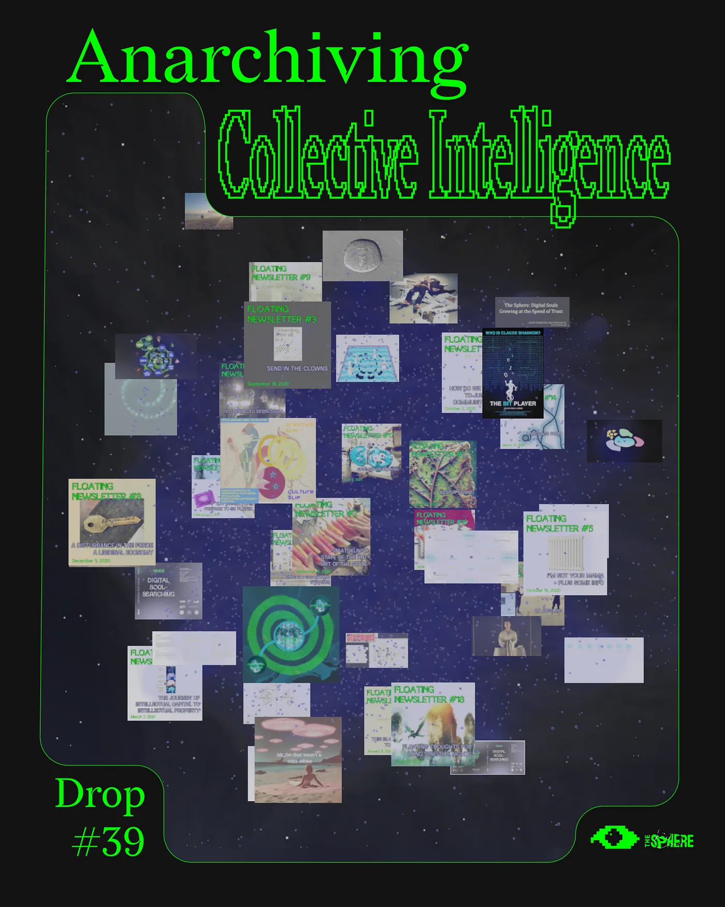
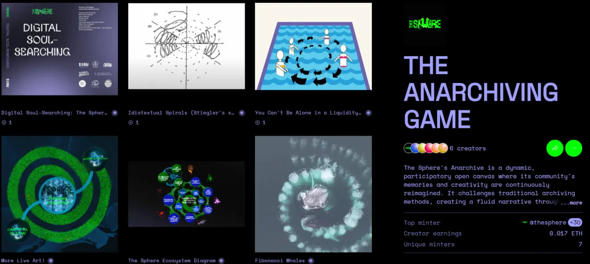
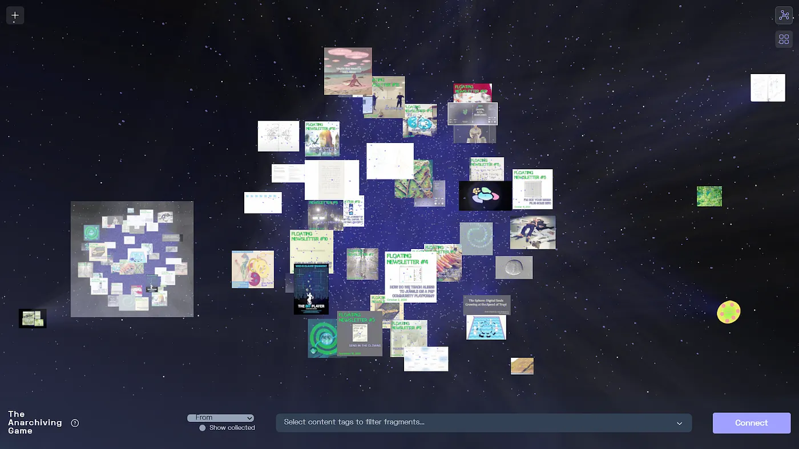
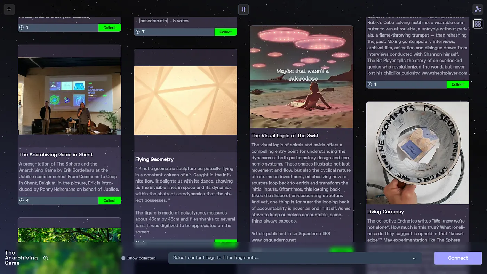
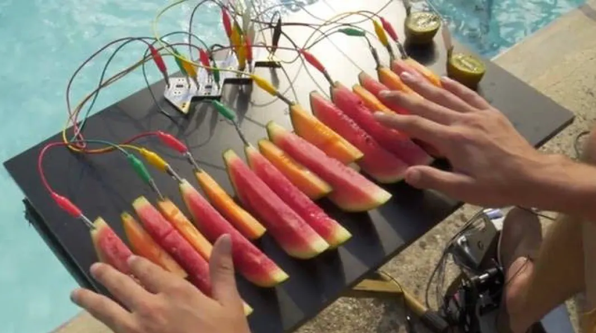
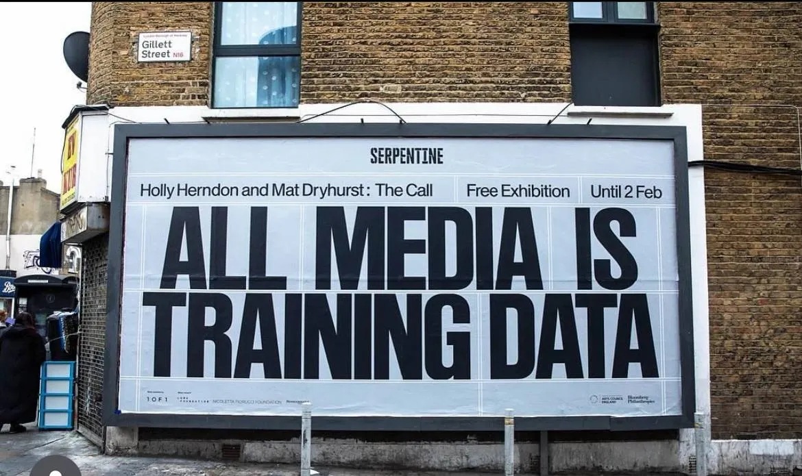

The Sphere's Anarchiving Game
Drop #39 · October 24, 2025 · 10 min read
Hey everyone (▰˘◡˘▰)
After several weeks away from this space, DROPS is back with a new special guest. I’m honored to host an intervention by Erik Bordeleau and the Sphere. The Sphere is one of the most solid and adventurous experiments at the intersection of art and Web3 technologies, and Erik is its most compelling cantor. It’s not the first time the Sphere appears on these pages: the historical readers may remember Drop #15, where I already articulated my personal coordinates in The Sphere’s helical journey. This time, DROPS hosts Erik Bordelau, one of the project’s co-directors, alongside Lene Vollhardt, Pedro Victor Brandão and Vitor Butkus.
With Erik and the Sphere, we share a distinct kind of Speculative Pragmatism: one that animates abstract thinking and infrastructural building simultaneously. Enchanted by the possibilities dormant in the latent space of every innovation paradigm, we work to conjoin them with choreographies solid enough to traverse the social field and activate new forms of meaning.
The Anarchiving Game, which Erik explores in this piece, offers a prototype for archiving our own stories: at a personal pace, on decentralized infrastructure, opening them to unexpected reactivations. This is what he articulates as collecting collective intelligence. In an era where every personal garden (ours included) falls under constant scraping by voracious AI scrapers - where all media becomes training data whether we consent or not - why not fabulate affirmative anarchiving processes instead? The questions multiply: What species of synthetic entities might we summon through our shared heritage? What will the archiving surfaces of the future look like, and who will determine their shape?
With this piece, DROPS opens a new sub-chapter exploring the constellation of problems emerging around new forms of synthetic intelligence. You’ll hear more in the coming months. For now, enjoy Erik’s words and keep an eye on the Sphere.
Erik Bordeleau is a philosopher, fugitive planner, curator and media theorist. He works as a researcher in philosophy at NOVA university in Lisbon and is the co-founder of The Sphere, a Web 3.0 research-creation project exploring new ecologies of funding for the performing arts. He collaborates to the weirdeconomies.com platform, where he coordinates the Cosmo-Financial Study Group.
The Sphere is an emergent network of radical theorists, artists and technologists exploring new ecologies of funding the arts. We are building web3-based regenerative commons in which artists, audiences, collectors and other stakeholders of the creative ecosystem come together to share the joy, risks and opportunities of making art. You can follow the project on their website and Instagram.

by Erik Bordeleau
Anarchiving Collective Intelligence
What does it mean to build an archive that resists the pitfalls of enclosure and self-assetization? I’m asking with Moten and Harney in mind, and more specifically, an interview they gave at the Disintegrator podcast earlier this summer. When asked about DAOs in relation to art organizations and the infrastructural turn – which they provocatively described as “mechanisms for the rehabilitation of a bad idea” (ha!) – they said something pretty interesting in relation to current modes of value capture: “These artists do all sorts of interesting things, and then they put a huge archive up above what they did - which loops them right back into the art world”. They then described DAOs as “reformist” and also “deeply depressing”, eventually landing into the idea that “art is perhaps a bad idea” and what we are more interested in is something like a “practice of beauty”.
I can’t always tell where the artworld – and beauty – commence and end. But in an age where every online gesture feeds proprietary LLMs, and where every community is continually wrapped and warped through various lifts and drags, the idea of fugitive planning certainly remains. And with it, to treat collective memory not as something to preserve, but as a practice itself – ephemeral, uncontained, and always already in motion within and without recursive (art) worldings on its edges.
What if we turn self-collecting – the anarchiving of collective memory – into live art itself?
The Sphere is an emergent network of radical theorists, artists, and technologists exploring new ecologies of funding the arts. We are building Web3-based regenerative commons in which artists, audiences, collectors, and other stakeholders of the creative ecosystem come together to share the joy, risks, and opportunities of making art.

The Anarchiving Game is our latest creation: a participatory Web3 protocol embodying the spirit of innovation and interdependence constitutive of the live arts. Based on a shared contract deployed on the Zora crypto-network, The Anarchiving Game enables people to mint, share and collect fragments of The Sphere’s creative journey. Think of a fractal and proliferating archive: an open-ended canvas where the collective memory and creative outputs of The Sphere’s community are not only preserved, but continually re-envisioned and synthetically expanded upon. Indeed, as the network of anarchivists grows, so will its social-oracular divinatory powers, turning the whole game into a unique value discovery process for self-collecting digital ensembles in becoming.


Digital Anarchiving as Live Art
In our initial karmic funding experiment, we asked artists to prepare their work for future iterations by other performers, in order to initiate creative lineages. Interestingly, this brought them to write love letters to one another, by way of soft protocols for derivation.
We are now doing the same with the Sphere as a derivative art organization, turning its source code inside out in order to allow it to renew itself and proliferate. We are approaching digital self-collecting, i.e. the anarchiving of a collective memory, as live art. And we believe present and future digital tribes might be interested in exploring what this could mean for themselves as well.
We have been thinking a lot about economic and governance rituals, and their function for collectively recording what computational sciences call a “state change”. What do societal performances of ownership aka choreographies of value require from us? What are we ready to lose, how much are we ready to commit in order to bring ourselves into forms and datasets irreversible?
Beyond Token-Gated Communities
Tokenizing online ensembles, that is, partly wrapping them in a web3 economic membrane, is always a partial and risky endeavor, to be managed with care. We harbor no illusions about blockchain as liberation technology – its carbon footprint, its libertarian fantasies, its inherent capture by degen financial speculation. Yet the protocol’s capacity for transparent, distributed coordination offers tools that, handled carefully and ritually, can serve collective rather than accumulative ends.
You can only assetize a community at your own risk. And that is because affective relational fields are never self-enclosed entities. The subtle web of relations constituting them tends to resist straight-forward capturing. In a way, communities behave just like intelligence does: it is what happens not inside but between bodies, entities and people. Intelligence is never a property of individuals; rather, it lurks in the interstices, as a differential coming together whose terms are constantly shifting and emerging. This is why, at the Sphere, we like to talk about belonging-in-becoming. How can we protect and nourish this qualitative dimension constantly re-generating itself through the collective?

Platform extractivism treats users as commensurate and fungible data sources. Where corporate AI treats human intentions as “merely local and transient interest”, i.e. worthless noise to be stripped from extracted information, The Anarchiving Game inverts this logic entirely. We want to make collective intelligence too slippery, too alive, too relational to be cleanly harvested. The Anarchiving Game is a Chinese cookie.
Beyond the different variations of token-gated communities, or more precisely, beyond the fantasy of self-sovereignty they embody, The Anarchiving Game experiments with free-flowing, derivative community formation, activating the edges of the social graph in an age of deep neural connections. We are looking for ways to generate and keep track of a variety of minor gestures in our midst, holding potential for new kinds of derivative network value production.
The feeling of interdependence is always at risk of being crushed under the various forms of ownership and data extractivism plotted by digital platforms. Yet, the proverbial ethical-financial principle of having ‘skin in the game’ shouldn’t be underestimated - perhaps especially so when dealing with live art. Are we ready to feed future LLMs not simply as individuals, but rather as new transindividual digital tribes? What would that entail relationally, and also financially? As AI artists Holly Herndon and Matt Dryhurst have emphasized through The Call, their ongoing exhibition at Serpentine Gallery in London: “If all media is training data, including art, let’s turn the production of training data into art instead.”

The Anarchiving Game can be understood as a new kind of data intermediating structure facilitating the formation of qualitatively charged datasets by capturing the transient movements of collective intelligence, something I describe elsewhere as synthetic swirls. These swirls are made of the continuous flow and interplay of ideas, affects, and creative actions as they manifest within a network. AI, in this context, becomes pivotal in both identifying and amplifying these flows that express the collective’s momentum through dynamic imprints. Such an intermediating structure corresponds to a new form of qualitative value – a non-linear, living archive of communal potential.
AI as in Anarchiving Intelligence
The Anarchiving Game is, ultimately, about another kind of AI: AI as in Anarchiving (collective) Intelligence. As an emergent organizational primitive, the game acts as both an archive and a transindividual catalyst, shaping how shared moments and ideas are gathered and reinterpreted, creating layers of meaning that persist as communal momentum. Value shaping becomes, more than ever, a future-facing (ad)venture, an exercise in dynamic registering of collaborative traces open to future iterations. In this context, deep learning capabilities come to act less as a sovereign extractive agent, as we have unfortunately become used to, but rather as an integrated assistant in network divination, fostering the continual, shifting self-discovery process of collective belonging-in-becoming.
All in all, our contribution is playfully speculative, yet rigorously pragmatic. Reflecting on the type of protocols and self-verification procedures characterizing distributed ledger technologies and the (in)formal powers of art, we are reminded of the Ancient Greek diplomatic figure of the theoros, from which derives the word ‘theory’. Originally, a theoros was someone who took part in oracular or religious festivities. As envoys representing their respective city-states, they were critical in the establishment and maintenance of relations between the poleis. It would be a mistake to reduce the function of these “emissaries to worlding”, as Ian Cheng has called them, to mere “representation”. Considering the ritual nature of the events they were (at)tending, theoroi were, quite literally so, living proof-of-celebration. Their (speculative) presence was both an attestation that some meaningful, shared collective state change had happened, and thus was to be socially computed in the diplomatic decentralized ledgers of the time (a network state avant la lettre?); and an anarchiving of the derivative intensity of the event in all of its transformative immediacy, ready for future relaying.
Conclusion: Protocol Art for Digital Tribes
The Anarchiving Game is both speculation and infrastructure: a playable theory of how communities might train AI on their own terms, preserve their memory without ossifying it, and generate derivative value that flows rather than accumulates. We believe we need more of these cosmo-diplomatic fabulations and open-ended gamified worlding practices.
Against the traditional structures of data capturing and ownership that render us fungible, we propose anarchiving as a form of collective becoming that refuses to be stilled, captured, or fully known – except by those who participate in its ongoing ritual of self-creation. The question is no longer whether AI will shape our collective intelligence, but whether we can shape AI through forms of collective intelligence that remain irreducible to extraction.